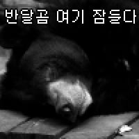

낮잠 자는 호랑이 가족
댓글
평화롭다.
이것들아.....엄마 잠좀자자.....
아빠인줄

뱃살 두툼 ㅋㅋ
디자인 개쩐다
엄마 너무좋아 ㅠ
호랑이가 새끼를 넷이나 낳다니 세상에
호랑이는 엄마호랑이가 독박육아? 하는줄 알았는데 아니더라구.... 의외였음
그냥 영역 범위가 ㅈㄴ 넓을뿐 산군에겐 큰땅이 필요하지 ㅋㅋㅋ
육아에 지쳐서 그냥 누운듯?
아빠 안잔다
사자가족은 많이 봐도 호랑이 가족은 처음보네 독고다이 하는줄 알았는데
왜 낮잠 자는 호랑이 가죽으로 보고 들어왔지..
호랑이가 새끼를 저렇게 많이 까니 조선시대에 호환마마가 그렇게 많았던거구나
그.. 개체수는 급양을 많이 하면 느니까..
호랑이랑 표범을 모두 범이라고 불러서
표범 개체가 ㅈㄴ 많앗대
엄마한테 한번씩 치대는건 사람이나 동물이나 비슷하네 ㅋㅋㅋ
호랑이가 새끼 4마리나 낳은 건 처음 본다. 보통 둘 이하던데.
귀여워 죽겠다
https://youtube.com/shorts/k1lEruet1g0?si=UtEGkXBYOGrM_wf-
다른 내용이긴 한데, 이거 볼때마다 호랑이 새끼나 사람 새끼나 사는거 비슷한거 같애